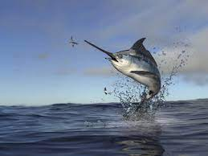

PEZ ESPADA

También llamado Emperador, Aguja palar,Marrajo, Espadarte, Moro o Mako. Este pescado azul es un pez óseo y de agua salada.
Pertenece a la familia Xiphidae. Vive entre 200 y 800 metros de profundidad. Habita en aguas cálidas de todo el mundo, donde la temperatura supera los 15º C, pero también pueden nadar y cazar en aguas de alrededor de 5º C. El pez espada es agresivo y voraz. Se alimenta de moluscos, diferentes tipos de peces y cefalópodos.
Este pez alcanza la madurez sexual entre los 2 y los 4 años, durante el periodo de reproducción los machos nadan alrededor de las hembras y fecundan los millones de huevos de 1.6 a 1.8 mm, que las hembras ponen en varias puestas sucesivas, los progenitores seguirán cerca de ellos para ahuyentar a otros peces que intentarán comérselos, realiza la reproducción en las aguas más cálidas y tiene lugar de junio a septiembre.
- El cuerpo del pez espada es azul o negro a excepción de la parte del vientre que es plateada.
- La aleta dorsal es de gran tamaño y no poseen aletas pélvicas.
- Su pico lo utiliza como arma tanto para atacar a sus presas, como para defenderse de sus depredadores naturales.
- Poseen órganos especialmente adaptados al lado de sus ojos que calientan estos últimos y también el cerebro. Se sabe
que dichos órganos pueden hacer que las partes del pez mencionadas tengan una temperatura 10 o 15º C superior a la del agua.
- Tiene una longitud que puede llegar a superar los 4 metros y más de 500 kg de peso, aunque lo normal son ejemplares de 2 a 3 metros y 120 kg.